채널: 레디포그로스 (Ready For Growth) | 길이: 14:00 | 날짜: 2026-03-17
영상 전반의 시각 스타일은 흰 배경 위 흑백 손그림 캐릭터에 붉은색 강조선을 넣는 방식이다. 붉은색은 물음표, 화살표, 폭발, 문 안쪽의 빛, 충전 상태, 슬로건 같은 핵심 포인트에만 쓰여 감정과 논리의 전환점을 강조한다. 즉, 이 영상은 단순한 일러스트 나열이 아니라 “공감-의미-에너지”, “검증-정지”, “케이블 연결-충전 시작” 같은 개념을 도식적으로 설명하는 화이트보드형 강의 영상이다.
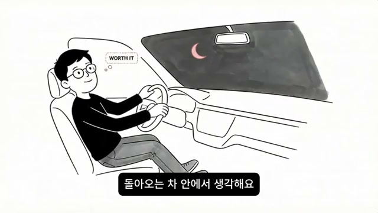
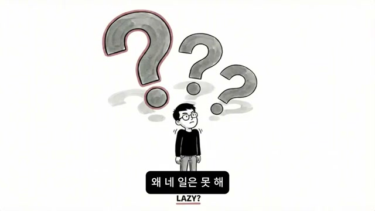
영상은 친구에게서 “나 이사하는데 좀 도와줄 수 있어?”라는 연락이 오는 상황으로 시작한다. 화자는 그 순간 “몸이 먼저 움직인다”고 말한다. 짐을 싸고, 참고, 옮기고, 새벽 2시까지 뛰어다니는 동안 분명 힘든데도 이상하게 기분이 좋고, 돌아오는 차 안에서는 “나 오늘 진짜 열심히 살았다”는 생각이 든다고 설명한다. 첫 번째 스크린샷은 밤하늘의 초승달 아래 차를 운전하는 화자를 보여주고, 머리 위에는 WORTH IT?처럼 자신의 하루를 가치 있게 느끼는 생각풍선이 떠 있다.
그러나 이 기분은 집에 돌아와 노트북을 열자마자 끊긴다. 내 이력서는 3달째 첫 줄도 못 썼고, 화면에는 커서만 깜빡인다. 이어지는 장면에서는 머리 위로 거대한 물음표들이 뜨고 아래에는 LAZY?라는 영문이 놓여 있어, “왜 남의 일은 하면서 네 일은 못 하냐”는 자기비난이 화면에서도 직접 강조된다. 이때 영상은 관객이 가장 쉽게 내릴 결론인 “게으르다”를 먼저 꺼낸 뒤, 그것이 오진임을 밝히는 방식으로 논리를 전개한다.
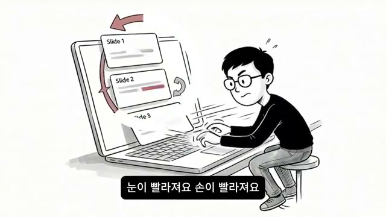
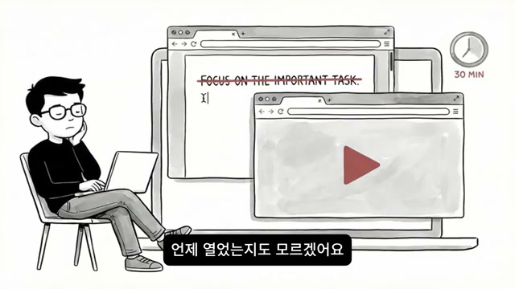
다음 예시는 후배 발표자료다. 후배가 “선배, 저 발표자료를 좀 봐주실 수 있어요?”라고 부탁하자, 화자는 밤 11시이고 하루가 길어서 피곤한 상태인데도 파일을 열면 멈출 수가 없다고 말한다. 슬라이드 흐름이 이상하다는 점이 보이고, “이 슬라이드는 순서를 바꾸면 훨씬 낫겠다”, “이 문장은 이렇게 고치면 확 살아나겠다”는 판단이 연달아 떠오르며, 눈이 빨라지고 손도 빨라진다. 스크린샷에는 Slide 1, Slide 2, Slide 3 카드가 붉은 화살표를 따라 재배치되고 있어, 단순 검토가 아니라 편집적 몰입이 일어나는 상태를 시각화한다.
이 몰입은 수정본을 다 보내주고 후배에게 “선배 진짜 감사합니다”라는 말을 들었을 때 “아, 나 쓸모 있구나”라는 감각으로 마무리된다. 그러나 다음 날 아침 자신의 사업기획서를 열면 상황이 전혀 다르다. 반년째 세 페이지에서 멈춰 있고, 집중은 30분도 못 간다. 화면에는 뒤쪽 창에 FOCUS ON THE IMPORTANT TASK.라는 문구가 줄이 그어져 있고, 그 앞으로 유튜브 재생 창이 튀어나와 있으며, 옆에는 30 MIN 시계 아이콘이 붙어 있다. 즉, 화자는 자기 과제에서 “산만해진다”고만 말하지 않고, 집중 의도는 있었지만 다른 창이 서서히 침입해 들어오는 실패 패턴까지 보여준다.
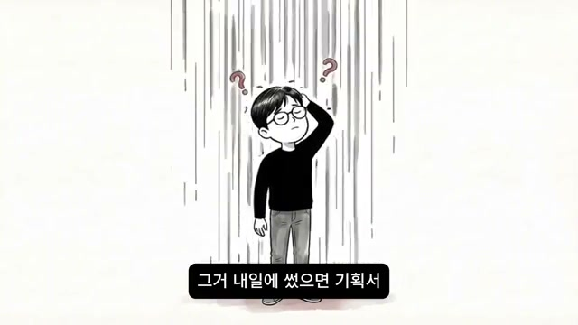
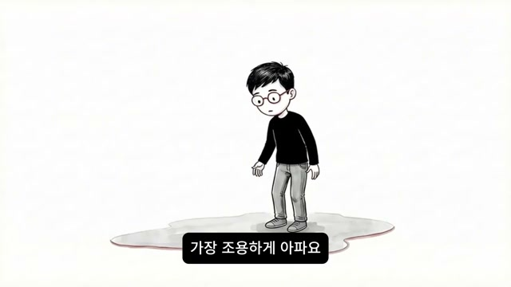
영상은 문제를 생산성 차원에만 두지 않고, 감정의 심연으로 내려간다. 화자는 밤이 되어 샤워를 하면서도 생각이 멈추지 않는다고 말한다. “어제 남의 일에 새벽까지 쓴 시간, 그거 내 일에 썼으면 기획서 절반은 끝났을 거예요”라는 계산이 시작되고, 곧 “왜 안 했지?”, “왜 남의 일은 되는데 내 일은 안 되지?”라는 질문으로 이어진다. 스크린샷에서는 세로선이 쏟아지는 듯한 배경 아래 화자가 머리를 짚고 서 있고, 작은 물음표들이 주변을 떠다닌다.
여기서 중요한 것은 질문의 방향이다. 처음에는 행동의 실패를 묻지만, 곧 “내가 게으른 건가?”, “아니면 원래 이런 건가?”로 이동한다. 즉, 문제는 “오늘 왜 못 했지”가 아니라 “나는 어떤 사람이지”로 바뀐다. 다음 화면에서 화자는 물웅덩이 같은 그림자 위에 혼자 서 있는데, 자막은 “가장 조용하게 아파요”라고 말한다. 이 장면은 외부의 비난보다 자기 내부의 낙인이 더 깊게 남는다는 사실을 시각적으로 정리한다.
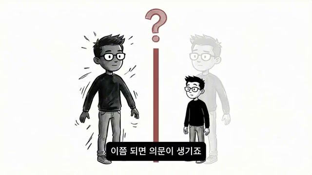
화자는 여기서 가장 아픈 결론을 직접 말한다. “나는 원래 남 좋은 일만 시키면 잘하는 사람이구나. 내 건 안 되는 사람이구나. 남의 인생에는 진심을 쏟으면서 내 인생에는 진심을 못 쓰는 사람이구나.” 영상은 이 결론이 “게으르다”는 말보다, “의지가 없다”는 말보다 더 깊게 남는다고 설명한다. 이유는 그것이 일시적 상태가 아니라 바꿀 수 없는 본질처럼 느껴지기 때문이다.
그리고 이 감정은 단발이 아니다. 지난달에도, 세 달 전에도, 1년 전에도 똑같은 패턴이 반복됐다고 화자는 말한다. 스크린샷에서는 검게 칠해진 커다란 에너지 상태의 자아와, 작은 수축된 자아가 붉은 세로선 하나를 사이에 두고 분리돼 있다. 같은 사람 안에 전혀 다른 두 작동 모드가 있다는 시각적 은유다. 이 지점에서 영상은 “그렇다면 도대체 왜 같은 사람이 같은 하루 안에서 이렇게 다른 두 모드로 작동하느냐”는 핵심 질문으로 넘어간다.
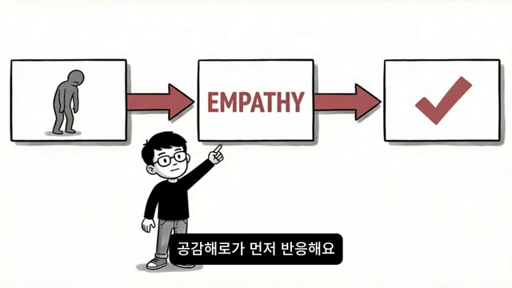
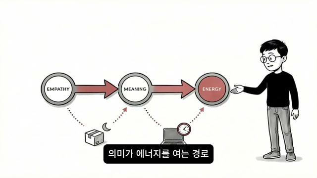
영상은 이 문제를 성격 문제도, 의지력 문제도 아니라고 단언한다. 오히려 “인프피의 뇌에는 실행 에너지를 공급하는 경로가 두 개 있다”고 설명한다. 하나는 타인 과제 경로이고, 다른 하나는 자기 과제 경로다. 중요한 것은 두 경로가 모두 같은 사람 안에 있지만 작동 방식이 완전히 다르다는 점이다.
타인 과제 경로에서는 상대의 고통이나 곤란함을 보는 순간 공감회로가 먼저 반응한다. 첫 번째 스크린샷에는 힘없이 구부정한 사람이 왼쪽 박스에 있고, 화살표를 따라 가운데 EMPATHY 박스로 넘어간 뒤, 다시 오른쪽의 체크 표시로 이어진다. 두 번째 스크린샷은 이를 더 정교하게 EMPATHY -> MEANING -> ENERGY로 확장한다. 즉, 공감이 의미를 만들고, 의미가 에너지를 여는 경로라는 것이 영상의 핵심 도식이다. 화자는 이 순간에는 “왜 해야 하지?”라고 고민할 필요가 없기 때문에 도파민이 즉시 공급되고, 에너지가 풀리며, 몸이 먼저 움직인다고 주장한다.
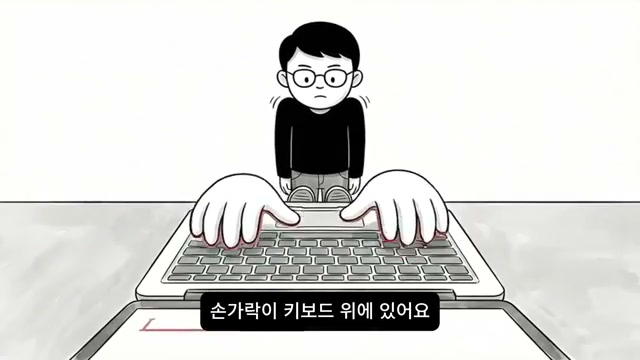
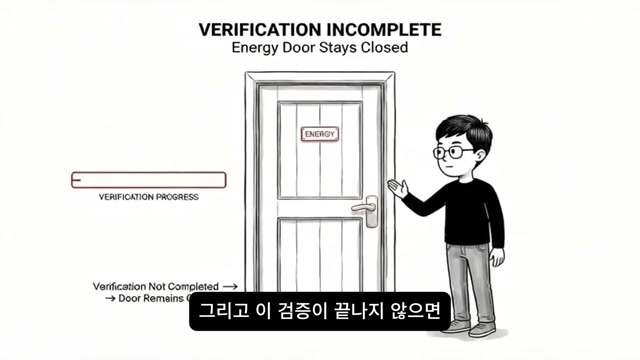
반대로 자기 과제가 들어오면 경로가 완전히 바뀐다고 화자는 말한다. 내 이력서를 써야 한다는 순간 뇌의 첫 번째 반응은 움직임이 아니라 “검증”이다. “이게 정말 의미 있는 일인가?”, “이걸 한다고 뭐가 달라지지?”, “여기 들어가서 진짜 하고 싶은 일을 할 수 있는 건가?”, “이 시간을 다른 일에 쓰는 게 낫지 않을까?” 같은 질문이 1초, 2초 안에 동시에 돌아간다는 설명이 나온다. 이 과정은 의식적으로 철학적 고민을 한다기보다, 뇌가 자동으로 의미를 확인하려는 회로라고 규정된다.
그래서 실제 체감은 아주 이상하다. 이력서를 열었고, 첫 줄에서 커서가 깜빡이고, 손가락은 키보드 위에 있다. 이름, 경력, 자기소개를 써야 한다는 사실도 안다. 그런데 손이 치질 않는다. 첫 번째 스크린샷은 거대한 키보드 위에 손이 올려져 있고, 그 위에 축소된 화자가 얼어붙어 서 있는 모습으로 이 감각을 그린다. 두 번째 스크린샷은 VERIFICATION INCOMPLETE, Energy Door Stays Closed, Verification Progress라는 영문까지 직접 넣어, “검증이 끝나지 않아서 에너지 문이 닫혀 있다”는 설명을 거의 시스템 경고창처럼 보여준다.
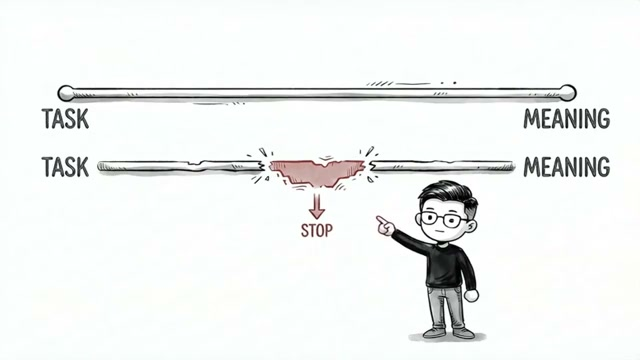
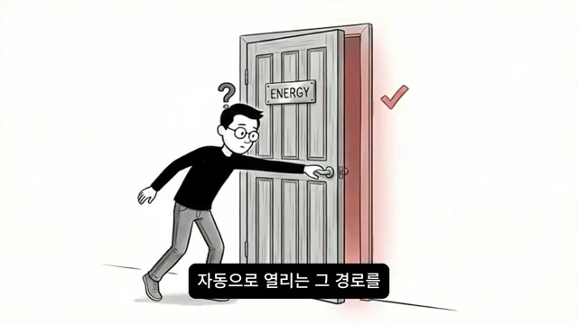
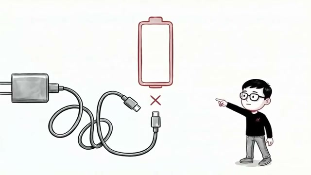
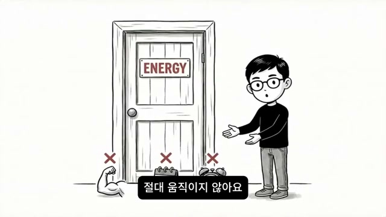
이후 영상은 비유를 더 구체화한다. 첫 번째 스크린샷에는 TASK에서 MEANING으로 가는 두 줄 중 하나는 멀쩡하지만, 하나는 중간이 찢어지며 STOP이 적혀 있다. 이는 과제 자체가 문제가 아니라 과제와 의미 사이의 연결이 끊기는 순간 실행이 멈춘다는 뜻이다. 곧이어 화자는 “타인 과제에서 자동으로 열리는 그 경로를 자기 일에서도 열 수 있을까?”라고 묻고, 답은 “열 수 있다. 하지만 방법이 다르다”이다.
그다음에 등장하는 것이 충전 비유다. 자기 과제에는 충전기와 배터리, 즉 에너지를 만들 수 있는 장비가 다 있는데 케이블만 없다고 말한다. 세 번째 스크린샷은 충전기와 스마트폰이 서로 바로 앞에 있지만 선이 닿지 않고 X 표시가 떠 있는 장면이다. 네 번째 스크린샷에서는 ENERGY라고 적힌 문이 굳게 닫혀 있고, 손이나 발 같은 물리적 힘의 시도에도 X가 표시된다. 즉, 의지력을 짜내거나 마감이 코앞에 와도 의미가 붙지 않으면 문은 안 열린다는 것이다. 이때 화자는 “그 케이블이 뭐냐면요, 의미예요”라고 명시한다.
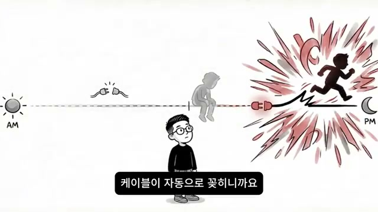
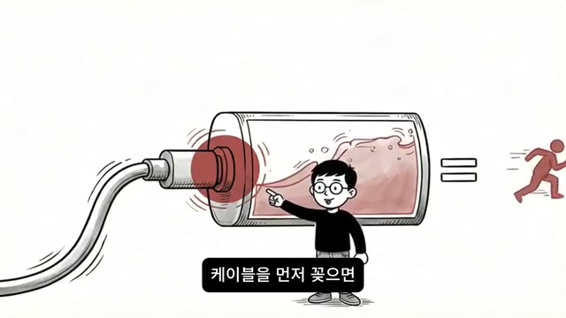
화자는 이 구조가 삶에서 어떻게 반복되는지 일상 단위로 보여준다. 아침에 눈을 뜨면 기획서, 이력서, 해야 할 내 일이 머릿속에 떠오른다. 그런데 손이 안 가는 상태로 하루가 흘러간다. 그러다 저녁에 누군가에게서 “이것 좀 도와줄 수 있어?”라는 연락이 오면, 그 순간 에너지가 터지고 밤새 그 사람 일을 해낸다. 그리고 다음 날 아침 다시 내 일 앞에서 멈춘다.
첫 번째 스크린샷은 AM의 해와 PM의 달이 그려진 타임라인 위에, 낮 동안은 고개 숙인 인물이 있고 저녁에 플러그가 꽂히자 붉은 폭발과 함께 달리는 인물이 튀어나오는 구조다. 두 번째 스크린샷은 배터리에 케이블을 꽂자 내부가 에너지로 차오르고, 오른쪽에 달리는 사람 아이콘이 등식처럼 붙어 있다. 이 장면의 핵심은 “에너지가 없었던 게 아니다”라는 선언이다. 에너지는 매번 있었고, 실제로 폭발했다. 다만 그 에너지가 남의 일 쪽에서만 터졌을 뿐이라고 영상은 말한다.
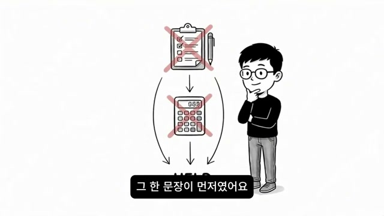
이제 영상은 해결법으로 넘어간다. 첫 번째 방법을 설명하기 위해 화자는 “남의 일을 도울 때 에너지가 터지는 그 순간, 당신이 가장 먼저 한 게 뭐였느냐”고 묻는다. 계획을 세운 것도 아니고, 효율을 계산한 것도 아니며, 체크리스트를 짠 것도 아니었다고 말한다. 스크린샷에서 체크리스트와 계산기 위에 모두 붉은 X가 그어져 있는 이유다.
화자가 보기에 가장 먼저 떠올랐던 것은 단 한 문장이다. “이 사람한테 도움이 되겠다.” 이 문장이 먼저 붙고, 몸이 따라간다. 반대로 내 이력서를 열 때는 “이력서를 써야 한다”는 의무만 있었지, 누구를 위한 것인지, 이게 되면 무엇이 달라지는지에 대한 연결은 빠져 있었다. 그래서 영상은 순서를 바꾸라고 말한다. 행동을 먼저 요구하지 말고, 의미를 먼저 붙이라는 것이다.
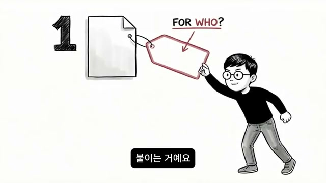
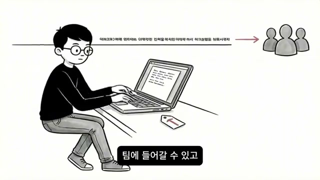
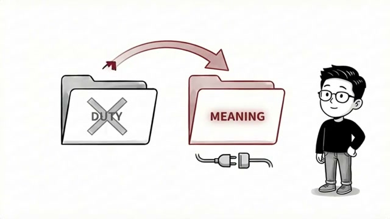
가장 구체적인 실천법은 “자기 과제에 누구를 위한 일인가를 먼저 붙이는 것”이다. 첫 번째 스크린샷은 빈 종이에 FOR WHO?라고 적힌 붉은 태그를 다는 장면이다. 즉, 과제 자체를 고치는 게 아니라 과제를 바라보는 프레임을 바꾸라는 뜻이다. 영상은 타인 과제에서 에너지가 터진 이유가 “이 사람을 돕는다”는 의미가 이미 붙어 있었기 때문이라고 재확인한다.
그래서 이력서를 열기 전에는 “이 이력서가 완성되면 내가 좋아하는 일을 하는 팀에 들어갈 수 있고, 거기서 내가 도울 수 있는 사람들이 생긴다”는 한 문장을 먼저 떠올리라고 제안한다. 두 번째 스크린샷에서는 노트북 위에 아주 작은 예시 문장이 길게 놓여 있고, 그 문장이 오른쪽의 사람들 아이콘을 향해 화살표로 이어진다. 사업기획서도 마찬가지다. “기획서를 끝내야 한다”가 아니라, “이 기획서가 만들어지면 이걸 보고 시작할 수 있는 사람이 생긴다”로 프레임을 바꾸라는 것이다. 세 번째 스크린샷의 DUTY 폴더가 MEANING 폴더로 바뀌는 장면은 바로 이 재분류를 시각화한다.
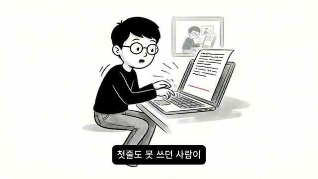
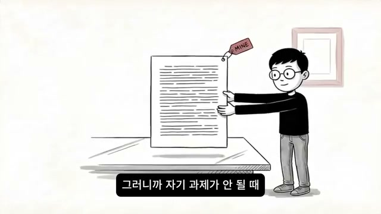
두 번째 실전 방법은 매우 흥미로운 심리적 트릭으로 제시된다. 화자는 “만약 절친이 나한테 이력서 좀 써달라고 부탁했다면 어떻게 쓸까?”를 진짜로 해보라고 말한다. 그러면 놀라운 일이 벌어진다고 한다. 갑자기 “얘는 여기서 이런 경험을 했으니까 이걸 앞에 놓으면 좋겠다”, “이 부분은 이렇게 표현하면 훨씬 낫겠다”는 문장이 보이기 시작한다는 것이다. 실제로 스크린샷에는 화자가 급히 타이핑하고 있고, 옆에는 정리된 문서가 떠 있다.
중요한 점은 그렇게 써놓고 보면 그 문서가 결국 내 이력서라는 사실이다. 내 경력이고, 내 경험이고, 내 이야기다. 그런데 진입을 타인모드로 했기 때문에 써진 것이다. 두 번째 스크린샷에서는 문서 한 장에 MINE 태그가 붙어 있어, 최종 산출물의 소유권은 여전히 나에게 있음을 보여준다. 영상은 이 방법을 “타인 과제 경로를 켜는 방법”으로 설명한다. 즉, 자기 과제가 안 될 때는 “소중한 사람이 부탁한 일”이라고 상상하는 질문 하나가 경로 자체를 바꾼다는 것이다.
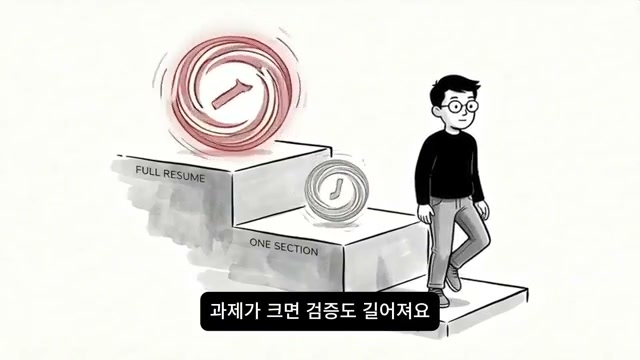
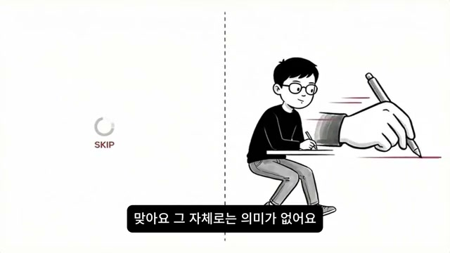
세 번째 방법은 시작 크기를 줄이는 것이다. 화자는 자기 과제 앞에서 에너지가 안 나오는 이유가 뇌가 의미 검증을 먼저 돌리기 때문이라고 다시 설명한다. 그런데 과제가 클수록 검증도 길어진다. “이력서 전체를 쓴다”고 생각하면 방향이 맞는지, 내용이 괜찮은지, 시간을 들일 가치가 있는지, 이게 정말 내 길인지처럼 검증할 것이 너무 많아진다. 첫 번째 스크린샷의 계단형 도식은 FULL RESUME와 ONE SECTION을 대비하면서, 과제가 클수록 올라서야 할 심리적 단차도 커진다는 점을 보여준다.
그래서 화자는 “검증이 끝날 필요가 없는 크기”로 줄이라고 한다. 전체 이력서를 쓰지 말고 한 줄만. 전체 기획서를 열지 말고 제목 한 줄만. 두 번째 스크린샷은 왼쪽의 SKIP과 오른쪽의 이미 손이 움직이고 있는 장면을 대비시킨다. 핵심은 거대한 의미를 완전히 확보한 뒤 시작하는 것이 아니라, 거대한 검증 루프가 돌기 전에 움직일 수 있을 정도로 작업 단위를 쪼개는 데 있다.
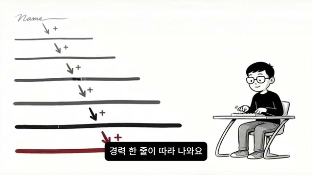
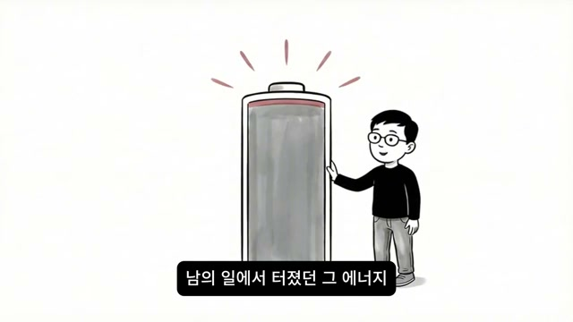
여기서 영상은 일부러 역설적인 말을 한다. “이름이랑 연락처만 쓰는 게 무슨 의미가 있어?”라는 질문이 당연히 나올 수 있는데, 맞다고 인정한다. 그 자체로는 의미가 거의 없다고 한다. 그런데 바로 그 점이 핵심이다. 너무 작고 의미가 없기 때문에, 뇌가 “이게 내 인생에 무슨 의미가 있지?” 같은 큰 검증을 돌리지 않는다는 것이다. 첫 번째 스크린샷에는 맨 위 Name에서 시작해 아래 줄들이 점점 길어지며 따라 나오는 그림이 있는데, 이름 한 줄이 다음 줄, 그 다음 줄을 불러오는 구조를 보여준다.
영상은 여기서 순서를 한 번 더 뒤집는다. 원래는 의미를 먼저 찾고 행동해야 한다고 생각하지만, 이 경우에는 아주 작은 행동이 먼저 일어나고 의미가 뒤따라온다고 말한다. 이름을 쓰고 나면 연락처가, 연락처를 쓰고 나면 경력 한 줄이, 경력 한 줄을 쓰고 나면 그 다음 줄도 쓸 수 있겠다는 감각이 올라온다. 두 번째 스크린샷의 가득 찬 배터리는 “에너지가 원래 없었던 게 아니라, 이미 안에 있었다”는 메시지를 보강한다. 즉, 움직임이 시작되면 의미 검증은 약해지고, 시스템은 이미 작동 중이기 때문에 다음 행동이 더 쉬워진다.
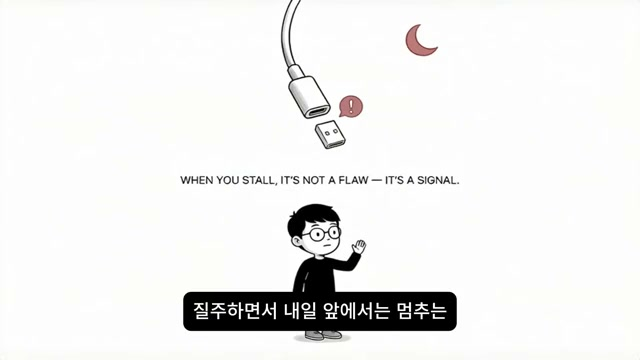
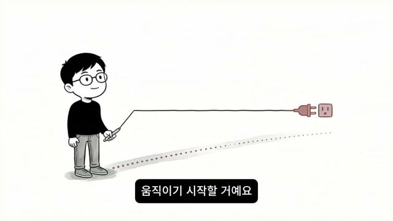
마지막 구간에서 영상은 전체 메시지를 가장 명확하게 정리한다. 스크린샷 상단에는 WHEN YOU STALL, IT'S NOT A FLAW - IT'S A SIGNAL.이라는 영어 문장이 보인다. 즉, 내 일 앞에서 멈추는 것은 “내가 고장 났다”는 증거가 아니라, “아직 케이블이 연결되지 않았다”는 신호라는 뜻이다. 화자는 앞으로도 남의 일에는 질주하고 내 일 앞에서는 멈추는 밤이 다시 올 수 있다고 인정한다.
하지만 그때 자신을 게으르다고 부르지 말라고 한다. 그 멈춤은 게으름이 아니라 “케이블이 빠져 있다”는 신호다. 의미 한 줄을 먼저 붙이고, 그래도 안 되면 타인모드를 빌리고, 그래도 무거우면 시작점을 이름과 연락처 수준까지 줄이면 된다는 것이 영상이 제시한 실전 순서다. 마지막 스크린샷에서 화자는 플러그 선을 잡고 있고, 반대편 콘센트 쪽으로 선이 연결되며 바닥에 점선 흐름이 생긴다. 남의 일에서만 터지던 에너지가 이제 내 일 쪽으로도 흐르기 시작한다는 선언적 이미지다.
영상 전체의 문제 정의를 한 문장으로 요약한 핵심 진단이다.
성격 비난에서 뇌의 작동 경로 설명으로 전환하는 분기점이다.
타인 과제에서 왜 고민보다 행동이 먼저 오는지를 설명하는 문장이다.
타인 과제 경로를 공감-의미-도파민-행동의 연쇄로 묶는 주장이다.
자기 과제 정지 현상의 가장 중요한 설명 문장이다.
머리로는 아는데 몸이 안 움직이는 이유를 압축한다.
문, 배터리, 충전기 비유의 핵심 정의다.
첫 번째 해결책의 원칙을 가장 직접적으로 표현한다.
타인모드를 빌려오는 상상 실험의 출발 문장이다.
왜 큰 목표가 곧바로 마비를 부르는지 설명하는 실전 문장이다.
자기비난을 행동 지침으로 바꾸는 결론 문장이다.
영상의 최종 정서적 메시지이자 재프레이밍의 마무리다.
이 영상의 핵심 메시지는 단순하다. “내 일이 안 되는 사람”이 아니라, “내 일에 연결되는 의미 회로를 아직 제대로 붙이지 못한 사람”이라는 것이다. 영상은 INFP라는 라벨을 쓰지만, 실제로는 자기 과제 앞에서 의미 검증이 과도하게 길어지는 사람 전반에 적용 가능한 구조를 제시한다.
실용적인 시사점도 명확하다. 첫째, 자기 과제 앞에서 바로 행동을 요구하지 말고 먼저 “누구를 위한 일인가, 이게 되면 무엇이 달라지는가”를 한 문장으로 붙여야 한다. 둘째, 그래도 막히면 소중한 사람이 부탁한 일이라고 상상해 타인 과제 경로를 빌려오면 된다. 셋째, 검증이 너무 길어질 때는 전체 목표가 아니라 이름, 연락처, 제목 한 줄 같은 초소형 시작점으로 줄여 손을 먼저 움직이게 해야 한다.
분석적으로 보면 이 영상은 논문이나 통계로 설득하지 않는다. 대신 친구 이사, 후배 발표자료, 이력서, 사업기획서 같은 일상 사례와 문, 케이블, 충전기, 폴더 재분류 같은 반복 비유를 사용해 복잡한 동기 문제를 직관적으로 설명한다. 그래서 이 콘텐츠의 강점은 과학적 엄밀성보다는 체감적 설득력과 자기비난을 구조 이해로 바꾸는 데 있다.
결국 이 영상이 남기는 가장 큰 전환은 이것이다. 내 일 앞의 멈춤을 “나는 원래 안 되는 사람”의 증거로 읽지 말고, “아직 의미 케이블이 안 꽂혔다”는 신호로 읽으라는 것. 그 한 줄의 재해석이 붙는 순간, 남의 일에서만 터지던 에너지가 내 일에서도 움직이기 시작할 수 있다는 것이 영상의 최종 결론이다.
댓글
GitHub 이슈 기반 댓글 시스템입니다.